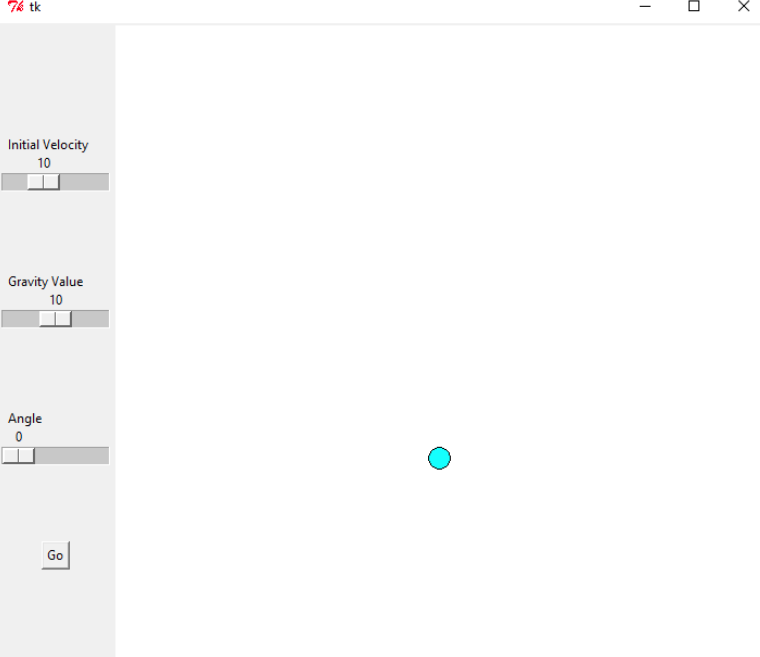
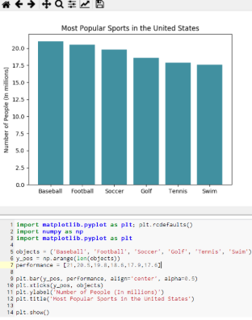

Our game is about a miner who grabs bitcoin. We used when sprite flung to move the miner and when sprite collided with to collect the coins.
This game is about a man who is on a treasure hunt and he is competing against other people. This game is based on the rags to riches plot. There is a big money prize at the end. You have to help him make the right decisions so he can win and get the money.

This is my soccer quiz in python. It will ask you 5 questions about a few famous soccer players.
This is my image that I manipulated for this project. 
Our GUI project has three slders one for the angle, gravity, velocity. you can change the values on the slider and this will cause the ball to behave differently

this is the python graph that I made that shows the numbers of players of the most popular sports in the U.S.


This is the random bals project that we made. You can control the amount of balls that are in at a time, and the number of balls in determines how much the bigger ball moves.